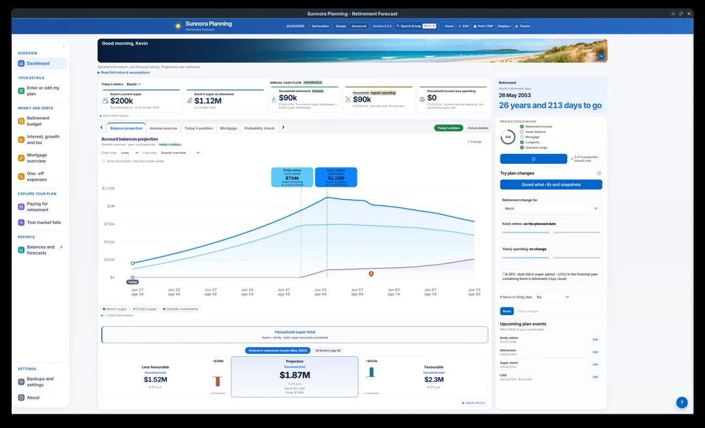
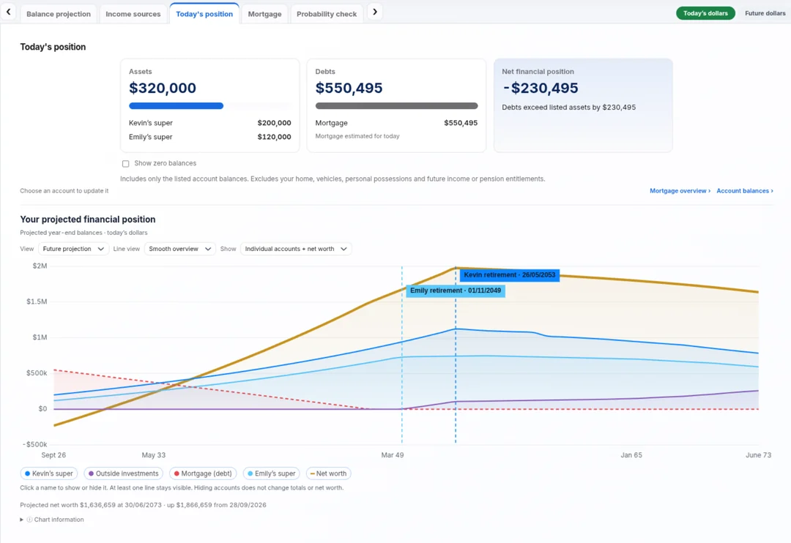
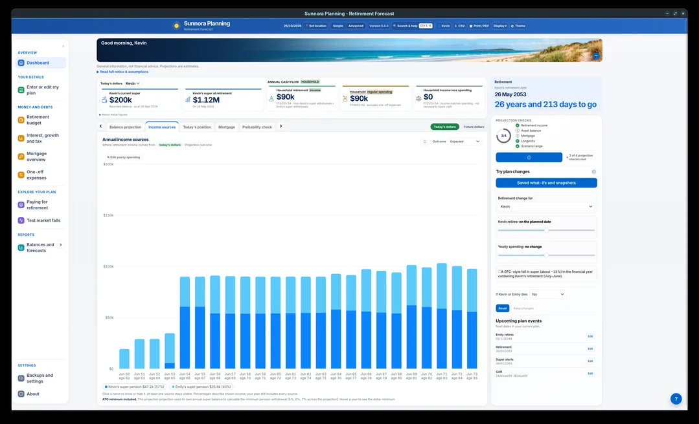
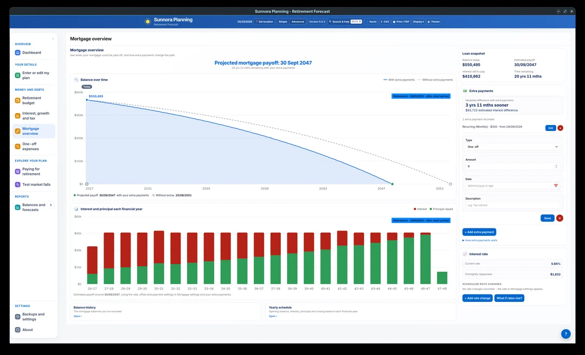
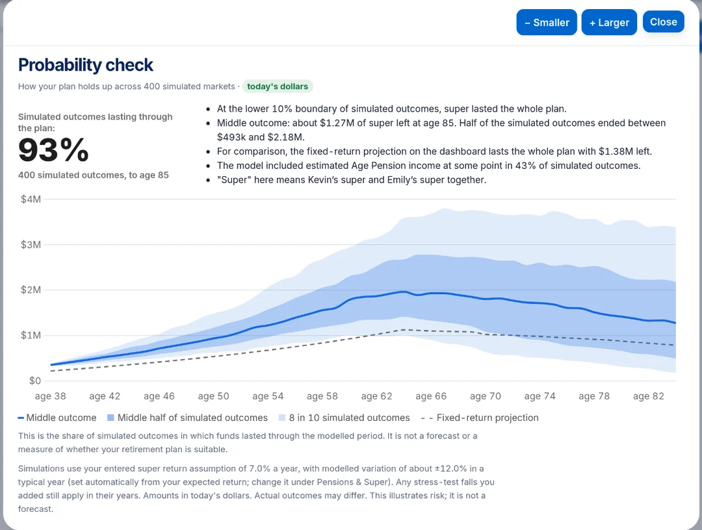
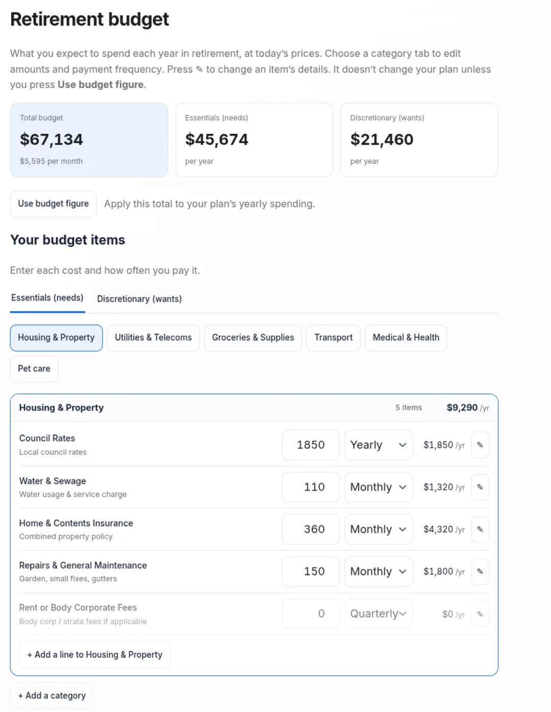
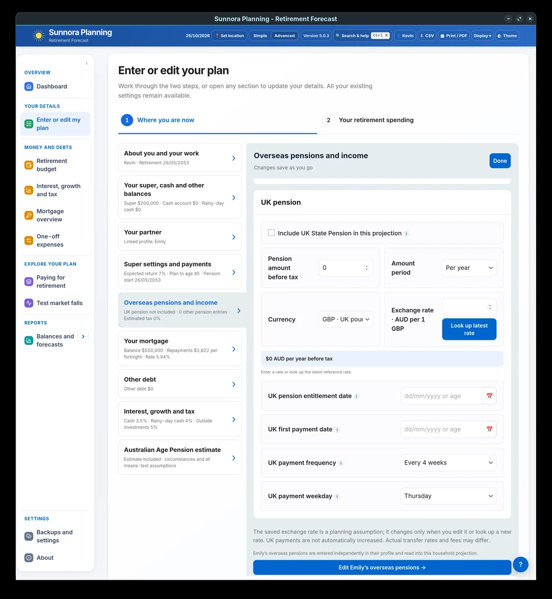

Explore Sunnora
A closer look at your retirement plan.
Explore the different views that bring your finances together. Select any screenshot to see it in detail.
Screenshots demonstrate Sunnora’s planning views. Results depend on the information and assumptions entered.
Household dashboard
See both retirement timelines together.
Follow each partner’s super balance, retirement timing and the household projection alongside income, spending and what-if controls.

⤢ Enlarge screenshotFinancial position
See your accounts and net worth over time.
Bring listed assets and debts together, then explore individual account projections and net worth.

⤢ Enlarge screenshotIncome sources
See where retirement income comes from.
Explore the projected sources of annual retirement income, including each partner’s super pension.

⤢ Enlarge screenshotMortgage overview
Explore your mortgage payoff path.
Compare the projected mortgage path with and without extra repayments, and review interest, principal and estimated payoff timing.

⤢ Enlarge screenshotProbability check
Explore a range of simulated outcomes.
View the share of simulations in which funds last through the modelled period, alongside outcome ranges and the fixed-return projection. These illustrate modelled risk; they are not forecasts.

⤢ Enlarge screenshotRetirement spending
Build a retirement budget.
Start with example categories, adjust them to reflect your own spending, and see the yearly, monthly and weekly picture. Sunnora can also compare your budget with the ASFA Retirement Standard.

⤢ Enlarge screenshotUK State Pension
Enter your UK pension assumptions.
Enter your pension amount, currency, exchange-rate assumption, entitlement date and payment schedule. Each partner’s overseas pensions are entered in their own linked profile.

⤢ Enlarge screenshotSee how the pieces fit together.
Free to download · Runs locally · No account required